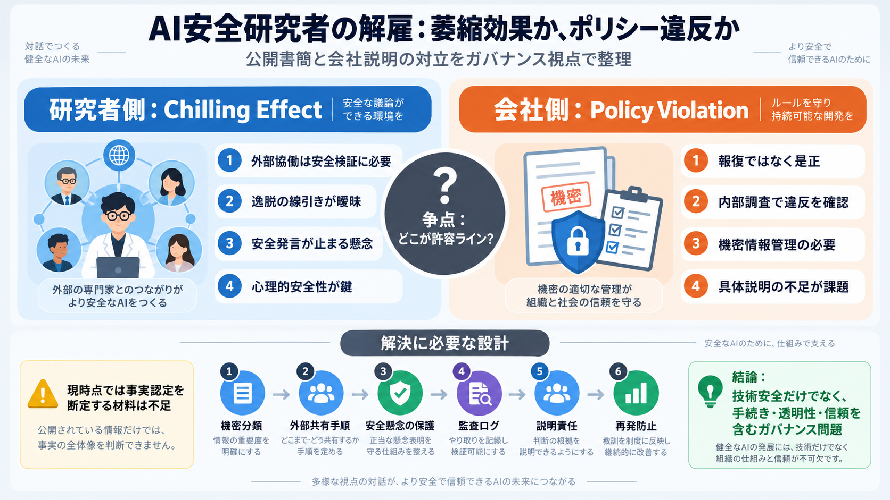

OpenAI fires three workers over mishandling 'sensitive information'
"Our investigation confirmed that these individuals mishandled sensitive information outside established company procedu…

Jasmine Wang / Tomek Korbak / Mikita Balesni（公開書簡）
外部連携や安全発言への報復ではなく、調査結果に基づく是正だと説明
何を「機密情報」とみなすか（秘密の範囲）
安全研究のための外部共有がどこまで許容されるか
解雇は萎縮（chilling）なのか、是正（correction）なのか
監視可能性（monitorability）・外部監査（external audit）
| 状態 | 起きやすいこと |
|---|---|
| 透明で手続きが明確 | 外部監査が進み、共有の線引きが学習される |
| 線引きが曖昧 | 「何が危険か」不明で、萎縮（chilling）が広がる |
| 是正が説明不足 | 信頼が落ち、当事者も外部も検証しにくくなる |
外部の視点でリスクを早期に発見・対策を洗練
監視可能性（monitorability）を含む検証設計を共同で作る
外部連携が萎縮すれば、安全の質が下がり得る
「逸脱」の範囲が曖昧だと、予測可能性が壊れる
会社が示した「逸脱」の範囲が曖昧で、検証しにくい
（何が許容で何が違反かの粒度が不足）
安全懸念を率直に表明する文化が萎縮（chilling）する
（社内外の協働が止まり得る）
「監視が難しくなる構成」への関与を否定
（ただし記事だけでは詳細が限定的）
委任されたアクセスが不要になった後の削除依頼が実行されず、誤ってセンシティブ情報を見て即時報告した、と説明
安全懸念への“報復”ではない
内部調査によりポリシー違反を確認
機密情報だけでなく、より広いミスコンダクト（不正・不適切行為）
記事上で「どのポリシー名」「どの事実」まで十分に特定されていない
| 軸 | 研究者側 | 会社側 |
|---|---|---|
| 意図 | 報復ではなく外部協働が安全に必要 | 報復ではなくポリシー違反への是正 |
| 影響 | 安全発言・共有が止まる（chilling） | ルール遵守と信頼の回復が目的 |
| 線引き | 逸脱範囲が曖昧で予測可能性が欠ける | 明確なポリシー違反と調査結果 |
| 検証性 | 記事だけでは事実が十分に確かめにくい | ただし記事上は具体が限定的 |
共有の“許容ライン”が明確
（何を・どこまで・誰に）
安全懸念を出した人が保護される実務
（通報・対話の設計）
誤認や運用ミスの際の是正と説明
（再発防止＋外部説明）
監視可能性（monitorability）を損なわない運用
（検証が可能な形で残るか）
機密の分類（sensitive / restricted など）と目的適合を明確化
外部専門家へのアクセス権と共有手続きを定義
安全懸念の提起（通報・相談）の保護プロトコルを整備
調査結果の説明責任（何が・なぜ・どう是正したか）を設計
監視可能性（monitorability）を保つため、検証用情報の扱いを規定
再発防止を運用に反映し、外部への信頼も維持
検証と外部協働が安全の質を支える
（萎縮は品質低下につながり得る）
機密管理と研究自由のバランスは規程＋運用＋説明で担保
恐怖や不確実性が発言を抑える（chilling）
（心理的安全性が鍵）
具体の不足は納得と外部信頼を損ね得る
機密の扱いは契約・社内規程・法的リスクにも影響し得る
（ただし詳細は追加情報が必要）
安全のための行動だったか、ルール違反だったかは事実と手続きの公正さ次第
会社のポリシー文書と、どの条項にどう違反したか
調査結果の概要（時系列・事実関係の粒度）
アクセス権の削除依頼など、運用記録の整合性
安全懸念の提起を守る仕組み（通報・保護）の実務
BBC：確立された手続きの外で機密情報を不適切に扱い信頼を損なった
TechCrunch：解雇理由として sensitive company information のアクセスと取り扱いのポリシー違反
当事者側は「外部連携が安全に必須」「chilling effect」を主張
会社側は「報復ではない」「調査結果に基づくポリシー違反」を説明
"Our investigation confirmed that these individuals mishandled sensitive information outside established company procedu…
OpenAI has reportedly fired three researchers from its safety team after an internal investigation found they allegedly …
In this video, Firstpost explains why OpenAI has fired three safety researchers following an internal investigation into…
On October 1, 2026, California attorney general Rob Bonta issued an subpoena to OpenAI as part of an investigation "rega…
“We have parted ways with three individuals for violating our policies on accessing and handling sensitive company infor…